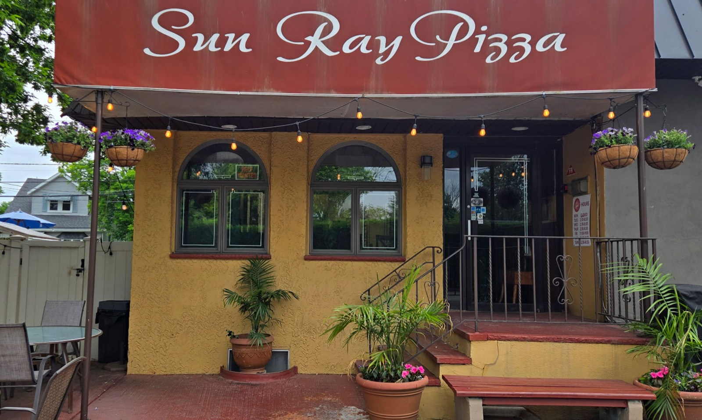
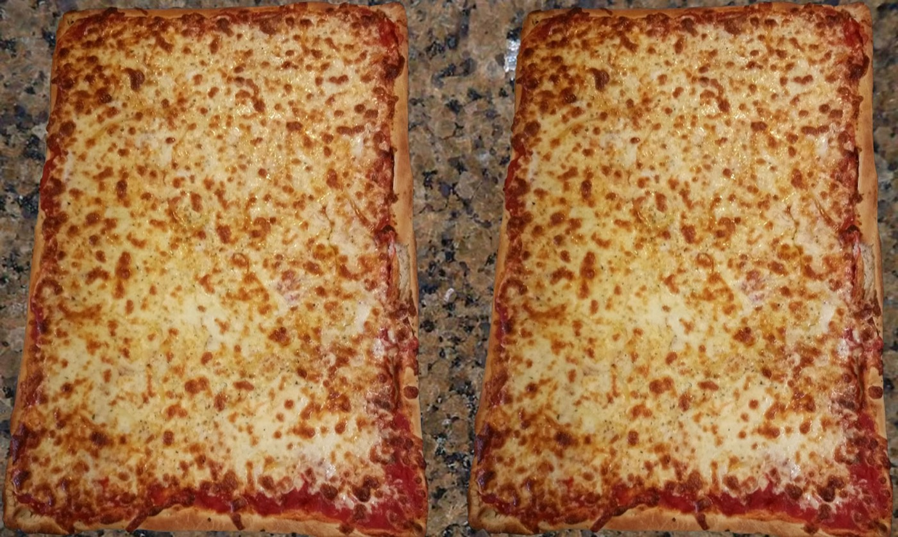
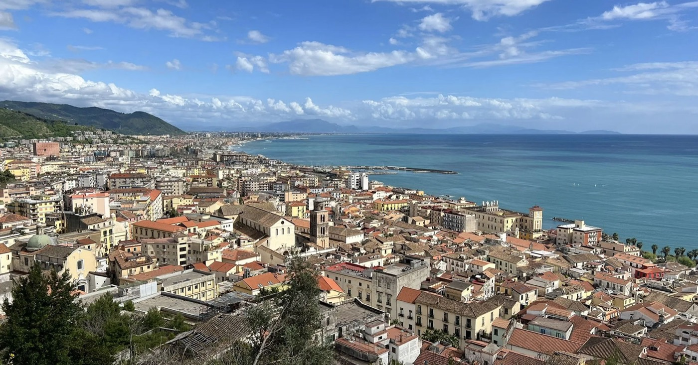
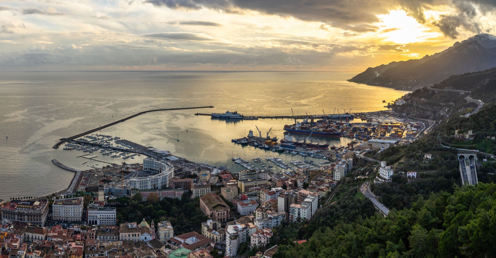
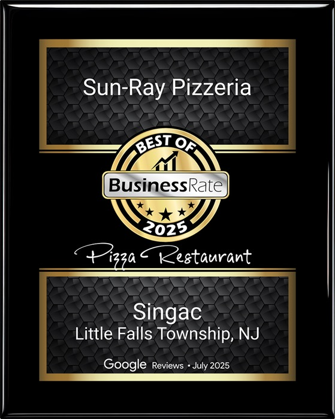

Dinners
- Veal Parmigiana$16.50
- Chicken Parmigiana$15.00
- Lasagna$15.50
- Linguini with Red or White Clam Sauce$14.50
- Tagliatelle Bolognese$14.75
- Cavatelli with Broccoli$12.00
Little Falls, New Jersey · Est. 1960
From Salerno to Little Falls, from our family to your family. Square pies, parm dinners, fresh bread and pasta made on location. Delivery or take-out from 440 Main Street.


The square pieOrder an 8-slice round, or go big with a 16- or 24-slice square. Add any topping for $3.00, or $1.50 on half.
Toppings: onions, mushrooms, peppers, broccoli, spinach, eggplant, jalapeños, olives, sausage, pepperoni, chicken, ham, bacon, meatballs, anchovies, buffalo chicken.
Prices from the current Sun-Ray take-out menu. Prices can change, so please confirm when you call.
“I cook by experience – by taste – by feel.”
Luigi Curcio, originator of Sun-Ray Pizza

Luigi learned to cook watching his mother Teresa and father Antonio. The family owned a farm, and nobody went to cooking school: “Cooking came naturally to us.”
Luigi was the first of the family to leave Salerno. With an uncle’s help he found work at a cookie company in Clifton and picked up English from the locals, until the rest of the family could follow.
Once everyone was here, the family opened a stand on the boardwalk in Atlantic City in 1960.
Next came a bakery in Paterson, and then pizza. The name Sun-Ray Pizza was a nod to that bakery, and the place was soon busy.
After many years in Paterson, Luigi moved Sun-Ray to Little Falls, and longtime customers still make the trip. Luigi passed in September 2021. Today his sons Angelo and Ralph carry on the family business.

The recipes came over from Polla. The bread and pasta are made on location at Sun-Ray, the way the family has always done it.
See the dinnersParty heroes come in 3, 4, 5 or 6 foot lengths, from $17.50 per foot. Add cold platters, plus half or full trays of hot appetizers, pasta and entrees.
A 10% delivery fee is added on all orders over $100.

Sun-Ray Pizzeria was named a 2025 Best of Business pizza restaurant for Singac, Little Falls Township, based on Google reviews.
Watch the Barstool Pizza ReviewSun-Ray Pizza on YouTube| Monday | Closed |
|---|---|
| Tuesday | 2:30 PM – 8:00 PM |
| Wednesday | 2:30 PM – 8:00 PM |
| Thursday | 2:30 PM – 8:00 PM |
| Friday | 11:00 AM – 8:30 PM |
| Saturday | 11:00 AM – 8:30 PM |
| Sunday | 2:30 PM – 8:00 PM |
Yes. Sun-Ray does delivery or take-out. Call (973) 256-0724 or (973) 256-0304 to place your order.
Yes. A gluten-free pizza is on the take-out menu for $12.00.
Pick from party heroes priced per foot (3, 4, 5 or 6 foot), 13-inch cold platters, and half or full trays of hot appetizers, vegetables, pasta and entrees. A 10% delivery fee is added on all orders over $100. See the catering menu.
There is outdoor seating in front of the shop at 440 Main Street.
No, Sun-Ray is closed on Mondays. Tuesday to Thursday and Sunday 2:30 PM – 8:00 PM, Friday and Saturday 11:00 AM – 8:30 PM.